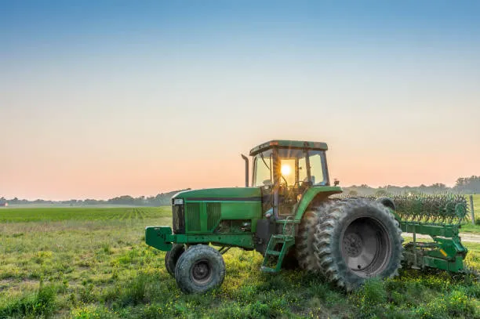
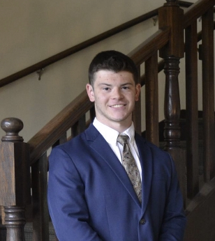

Coltivare

Our Story
Stemming from the agrirucultarly rich Purdue University, 3 students formed Coltivare to aid farmers. Offering initail poridcuts like the geoscanner to the pestimator, we've done just that. Forutnately the products seen from Coltivare are only an initial look into how farming technology will continue to be changed. Our inspiration comes from our home in Indiana, where agriculture plays a big role in our state.
Our Mission, Vision and Goals
Here at Coltivare, we strive to improve the lives of farmers, so that they can better help society. We believe that by helping the people who support us, we can create something lasting from the ground up. Thats why we support our farmers in their businesses. We strive to uphold honesty, integrity and trust with our customers and we do this through our products by making the lives of farmers all over the US much easier.
Investment Opportunities
As a small company, we seek partners, those who would join us on our quest to help farmers around America. If you are interested in such an opportunity, you could find more information by contacting us. We would love the opportunity to come together with other like minded people
Meet the Management Team
Yaajushi Valluri (CEO)
Richard Liu (CFO)

Charlie Woodward (Sales Rep)
Contact us here!
Email - liu3551@purdue.edu